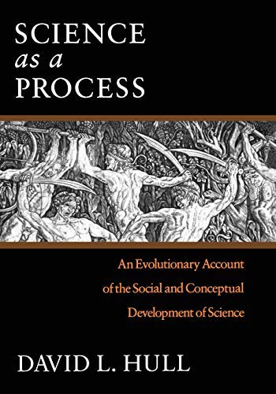
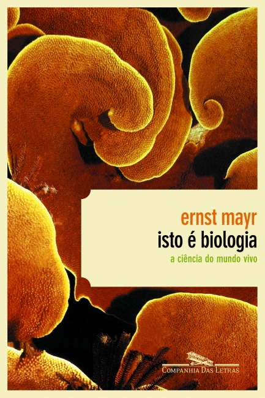
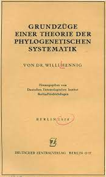
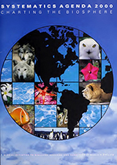
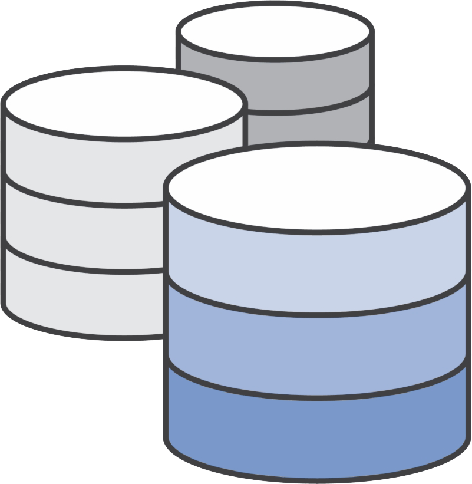
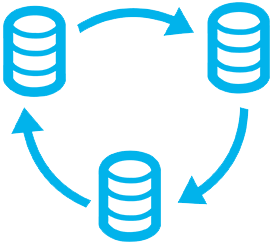
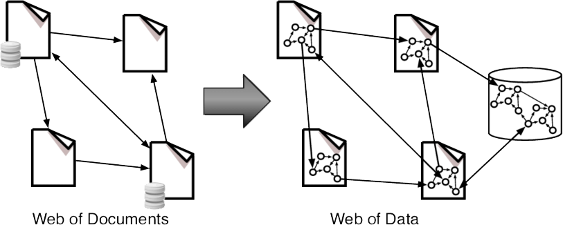

1 Contextualizando
Por que / Para que contextualizar?
To change our future, we should change how we teach history to children
Yuval Noah Harari, 2022. Artigo publicado no The Guardian, na coluna Opinion History: https://www.theguardian.com/commentisfree/2022/oct/18/change-future-teach-history-children
1.1 Histórico e fundamentos
A história da filoinformática insere-se na história da sistemática biológica pós-hennigiana da década de 50–60, isto é, a sistemática filogenética, e, evidentemente, surge após o desenvolvimento da informática, nessa mesma época.
Para uma aprofundada análise da história da classificação biológica…

David L. Hull (1935–2010)
Obtuário publicado em Biology and Philosophy 25 (2010): 749–753
Systematics War
Taxonomia evolutiva [Gradismo]: Genealogia e similaridade adaptativa
Taxonomia numérica [Fenética]: Similaridade total
We live in a world of stridently competing commercial messages, pressed upon us in favor of one product or another. High-pressure salesmanship and hyperbole are not restricted to the world of business. In fact, “success in science depends not only on rational argument but on a mixture of subterfuge, rhetoric, and propaganda” (attributed to Feyerabend by Broad 1979).
Moss, W.W., 1983. Taxa Taxonomists, and Taxonomy. Numerical Taxonomy, 72–75. doi:10.1007/978-3-642-69024-2_8
Taxonomists. Taxonomists have always had the reputation of being difficult. Intransigence may be rooted in the necessity of defending prolonged self-immersion in a taxon that others find a total bore; it is frustrating to have one’s life work greeted with a yawn. Numerical taxonomists have proved to be just as prickly as conventional taxonomists, possibly more so because some of the brightest people in systematics are involved in the current taxonomic battles. The political maneuvering and character assassination that characterize certain taxonomists today may not be atypical for science; they certainly provide a fine example of its seamier side. If Feyerabend is correct, it may be even a requirement of human nature that scientific progress occur in this manner. Nevertheless, numerical taxonomists are part of a larger community of systematic and evolutionary biologists, and of biology as a whole.
Moss, W.W., 1983. Taxa Taxonomists, and Taxonomy. Numerical Taxonomy, 72–75. doi:10.1007/978-3-642-69024-2_8
Filogeneticistas [Cladística]: Genealogia
Não deixe de conferir o livro de Ernst Mayr: Isto é biologia: a ciência do mundo vivo para aprofundar os conhecimentos sobre a história da Biologia e das classificações biológicas.

Ernst W. Mayr (1904–2005)
O mundo experimentava uma grande revolução tecnocientífica que levou a uma nova episteme, o pós-modernismo. A pós-modernidade, no âmbito das tecnociências (Luz, 2014), foi caracterizada pelo surgimento da cibernética, informática, robótica, biologia molecular e a medicina nuclear, entre outras áreas de desenvolvimento tecnológico.
A gênese da informática insere-se na história do desenvolvimento do pensamento sistêmico e da lógica, e intrinsecamente correlacionada ao pensamento biológico contemporâneo. Suas raízes filosóficas, epistemológicas, podem ser buscadas na filosofia da linguagem e no positivismo lógico, cujos precursores pertenciam ao Círculo de Viena, que se dedicaram especialmente à Filosofia da Ciência.
O Círculo de Viena era composto por cientistas que, apesar de atuarem em várias áreas como física, economia, etc., buscaram resolver problemas sobre os fundamentos da ciência. Com as ideias desenvolvidas no Círculo de Viena, a Filosofia da Ciência passa a se ocupar especialmente acerca da analise do método e da linguagem das ciências. A filosofia passa a ser vista como necessária à análise lógica da linguagem e a descoberta de modos de redução das ambiguidades nas ciências.
O Círculo de Viena adotou uma forma de empirismo indutivista, fazendo uso de instrumentos analíticos, como a lógica e a matemática, para auxiliar na formulação dos enunciados científicos.
Fonte para “Círculo de Viena”:
O Círculo de Viena e o início da Filosofia Contemporânea da Ciência: https://brasilescola.uol.com.br/filosofia/o-circulo-viena-inicio-filosofia-contemporanea-ciencia.htm
Rodrigues, J.P., sem data. Neopositivismo – Círculo de Viena: https://sublimefilosofia.com.br/neopositivismo-o-circulo-de-viena.

O Círculo de Viena foi o nome como ficou conhecido um grupo de filósofos que se juntou informalmente na Universidade de Viena de 1922 a 1936 com a coordenação de Moritz Schlick. Também foi chamado de “Sociedade Ernst Mach” em homenagem a Ernst Mach (Stanford Encyclopedia of Philosophy). Em reuniões semanais procuravam reconceitualizar o Empirismo a partir das novas descobertas científicas e demonstrar as fragilidades da Metafísica. Suas atividades cessam quando Schlick é assassinado por um fanático nazista em 1936 (Wikipedia contributors, 2022i).
Seu sistema filosófico ficou conhecido como o “Positivismo Lógico”, ou ainda, “Empirismo Lógico” ou “Neopositivismo” (Wikipedia contributors, 2022i).

A informática se desdobra no conhecimento humano a partir de uma racionalidade que se desenvolveu no século XX e que ficou conhecida como “visão sistêmica” ou “pensamento sistêmico”, decorrente dos avanços teóricos especialmente nas áreas da biologia e filosofia da ciência.
Organicismo -> Emergentismo -> Teoria Geral dos Sistemas -> Cibernética -> Informática
Londres, década de 30. The Theoretical Biology Club — esse era o nome que Joseph Needham dava às suas reuniões. O objetivo desse núcleo de cientistas (Ross G. Harrison, Joseph Needham, Paul Weiss, Joseph Woodger, John Haldane) era afastar o campo da metáfora da máquina (mecanicismo -> fisicalismo) e da metafísica do vitalismo para a filosofia empiricamente orientada da biologia organísmica (organicismo).

- Ludwig von Bertalanffy (1901–1972): precursor da Teoria Geral dos Sistemas.
- Austríaco, biólogo
- “Pai do organicismo”?
- Tudo é parte de algum todo.
- Norbert Wiener (1894–1909): Cibernética

Americano
Foi aluno de .
Em 1948, Wiener publicou o livro
Cibernética: ou Controle e Comunicação no Animal e na Máquina:
A cibernética é o estudo interdisciplinar da estrutura dos sistemas reguladores, suas estruturas, restrições e possibilidades. Norbert Wiener definiu a cibernética em 1948 como “o estudo científico do controle e comunicação no animal e na máquina” (Wikipedia contributors, 2022g).
A cibernética é aplicável quando um sistema em análise incorpora um circuito fechado de sinalização — originalmente chamado de relação “causal circular” — isto é, onde a ação do sistema gera alguma mudança em seu ambiente e essa mudança é refletida no sistema de alguma maneira (feedback) que aciona uma alteração no sistema. A cibernética é relevante para, por exemplo, sistemas mecânicos, físicos, biológicos, cognitivos e sociais (Wikipedia contributors, 2022g).
Alan Turing (1912–1954): Informática

- Britânico, “pai da computação”
- Criou a “Máquina de Turing”, protótipo dos computadores modernos.
- Desenvolveu um máquina para decifrar o código da “Máquina Enigma” (1918), utilizada pelos nazistas durante a Segunda Guerra Mundial.
- A cibernética desempenhou um papel decisivo no surgimento da revolução tecnológica.
- Foi aluno de John von Neumann (outro pioneiro da cibernética). Ambos e Claude Shannon, aluno de Norbert Wiener, com a sua Teoria da Informação, foram os precursores do computador (Wikipedia contributors, 2022g).
- Em 1943, constrói a primeira geração de computadores modernos (a válvula).
O primeiro transistor foi criado com sucesso em 23 de dezembro de 1947, nos Laboratórios Bell em Murray Hill, Nova Jersey.
- Hautsch, O., 2010. O que é um transistor e porque ele é importante para o computador?
Por seu turno, a Sistemática Filogenética (cladística), postulada por Willi Hennig, foi originalmente concebida, mesmo que apenas em princípios, com a publicação de Grundzüge einer Theorie der phylogenetischen Systematik, em 1950.
A intenção de Hennig era tornar a Sistemática uma ciência com métodos objetivos e reprodutíveis, afastando-a das hipóteses ad hoc, idiossincráticas. Por isso, ele desenvolveu não apenas um novo método, mas também ocupou-se de sua justificação teórica.
Hennig era excepcionalmente preocupado com questões filosóficas (Tremblay, 2013).
Era muito comum na Alemanha do século XX os biólogos se ocuparem com questões filosóficas, principalmente como resultado da tendência interdisciplinar na cultura acadêmica naquela época.
Hennig estava extremamente comprometido com a dimensão ontológica e epistemológica do seu sistema filogenético.
Hennig tinha um interesse profundo em Filosofia, mas não era um filósofo de formação. Usou uma abordagem eclética, buscando ideias em diferentes fontes (Schmitt, 2013).
Cursou apenas uma disciplina de Filosofia na Universidade.
Correspondências com sua esposa, amigos, dentre os quais, Klaus Günther.


Willi Hennig (1913–1976)
O trabalho de Hennig apenas ficou conhecido com a publicação de Phylogenetic Systematics, em 1965, publicado em inglês, e suas ideias passaram a serem difundidas por outros taxonomistas:
O trabalho de Hennig está escrito em alemão bastante difícil, algumas frases sendo praticamente ininteligíveis. Em nenhum lugar se refere aos escritos de Huxley, Mayr, Rensch, Simpson e outros autores que cobriram em parte o mesmo terreno nas décadas anteriores. Novos termos e definições são introduzidos casualmente, mas não há um índice que guie a pessoa para as páginas relevantes. Não surpreendentemente, o volume foi inicialmente ignorado universalmente, exceto por alguns autores alemães. Não se tornou mais conhecido até 1965 e 1966, quando foram publicadas versões em inglês da metodologia de Hennig. Na década de 1970, um culto virtual de Hennig se desenvolveu, embora alguns de seus chamados seguidores tenham se afastado bastante dos princípios originais de Hennig.
Marco histórico da divulgação do programa de pesquisa Hennigiano foi a apresentação da tese de doutorado de Lars Brundin (1907–1993) no 4th Nobel Symposium Current Problems of Lower Vertebrate Phylogeny, realizado em 12–16 de junho de 1967.
- Tese de Doutorado 1966: Transantarctic Relationships and Their Significance, as Evidenced by Chironomid Midges, with a Monograph of the Subfamilies Podonominae and Aphroteniinae and the Austral Heptagyiae.
- Formalizou o método que ficou conhecido como Biogeografia Filogenética Mattox (2011).

- A tese de Brundin utilizando os método hennigiano chamou a atenção de Gareth Nelson (1937–), ictiologista, e grande difusor dos princípios da sistemática filogenética.


Fotografia de Gareth Nelson (à dir.) junto a Lars Brundin (à esq.), tirada por Christopher Humphries em 1988, próximo ao Museu Sueco de História Natural em Estocolmo [publicada originalmente em Nelson (2000)] Mattox (2011).
Darwin’s philosophy of classification is differently interpreted. Mayr (1974:120), for example, states “Evolutionary taxonomists have long been convinced that they strictly follow Darwinian principles of classification by giving equal consideration to branching and to phyletic change.” By “evolutionary taxonomists,” Mayr means those taxonomists who might agree with his philosophy of classification (e.g., Mayr, 1969). Mayr (1974:95) states, also: “The synthetic or evolutionary method of classification thus combines components of cladistics and of phenetics… The method in which cladistic and phenetic components are combined was originated by Darwin.” I have elsewhere suggested that Darwin’s philosophy of classification agrees better with Hennig (1950, 1966) than with Mayr (Nelson, 1971); the implication is that Mayr’s “synthetic or evolutionary method of classification” is not of Darwinian but rather of Mayrian manufacture.
Darwin-Henning Classification: A Reply to Ernst Mayr, Nelson (1974).
Como a sistemática se tornou filogenética… Eldredge (2010).
The furor engendered by the upstart arrival of Hennig’s ideas has long since died down—and phylogenetic systematics is now the de facto order of the day. By the 1980s, recognizing that the essence of the analytic approach is the precise mapping of the distribution of characteristics in the attempt to separate relatively derived (advanced) from primitive features (and from “convergent” or “homoplastic” characters as well)—with groups to be defined and recognized solely on shared possession of “derived” features, algorithms that did the job on computers began to replace hand drawn cladograms on paper (whether napkins or otherwise).
De grande importância é a edição especial sobre como ensinar filogenia da periódico científico Evolution: Education and Outreach, editado por Daniel R. Brooks, em 2010.
A emergência da cladística hennigiana, foi revolução científica kuhnina ou não foi?
Sim: Terra (2010)
Um dos primeiros esforços para estabelecer uma agenda para a sistemática biológica claramente definida ocorreu em meados da década de 70. Entretanto, não se tratava de uma iniciativa global (Eshbaugh, 1995).
O workshop realizado em 1974 no Missouri Botanical Garden, St. Louis, EUA, pode ser considerado um marco para a Filoinformática.
Nele, foram definidas tendências, prioridades e necessidades no campo da biologia sistemática e evolutiva.
O evento foi financiado por pelo Systematic Biology Program da Division of Biological and Medical Sciences da agência governamental americana National Science Foundation. O encontro resultou na publicação do relatório: Trends, Priorities, and Needs in Systematics and Evolutionary Biology (Anônimo, 1974).
Na década de 80, grandes avanços ocorrem na Sistemática Filogenética, com a publicação de importantes livros teórico-didáticos e o surgimento dos primeiros programas de computadores para realização de análises filogenéticas (ver item \(\ref{softwares_filogenia}\)).

- A partir do início dos anos 90, sistematas começaram a se envolver cada vez mais na conservação e no papel desempenhado pela sistemática na solução de problemas da sociedade. O senso de urgência e um apelo à comunidade sistemática de biologia para definir claramente suas prioridades e agenda de pesquisa levaram a uma reunião de aproximadamente uma dúzia de pesquisadores, representando a American Society of Plant Taxonomists, a Society of Systematic Biologists e a Willi Hennig Society do American Museum of Natural History, em março de 1991. No início da reunião, reconheceu-se a necessidade de uma iniciativa abrangente para integrar os esforços em prol de objetivos comuns (Cracraft, 2002a; Eshbaugh, 1995).
O marco teórico da filoinformática, isto é, o momento no qual os pressupostos gerais e conceitos específicos desse campo do conhecimento começaram a ser desenvolvidos, tem sido demarcado pela publicação da Systematics Agenda 2000, em 1994 (Cracraft, 2002a).
 Systematics Agenda 2000: Charting the Biosphere. Publicada em 1994.
- Três missões:
Descobrir, descrever e inventariar a diversidade global de espécies.
Analisar e sintetizar informações em um sistema de classificação preditivo que reflita a história da vida.
Organizar informações em uma forma eficientemente recuperável de modo que atenda às necessidades da ciência e da sociedade.
1.2 Bioinformática > Filoinformática
A bioinformática é um campo interdisciplinar que desenvolve métodos e ferramentas de software para a compreensão de dados biológicos, em particular quando os conjuntos de dados são grandes e complexos. Como um campo interdisciplinar da ciência, a bioinformática combina biologia, química, física, ciência da computação, engenharia da informação, matemática e estatística para analisar e interpretar os dados biológicos. A bioinformática tem sido utilizada para análises in silico de consultas biológicas utilizando técnicas computacionais e estatísticas (Wikipedia contributors, 2022a).
A filoinformática é uma subárea da bioinformática (Bioinformática > Filoinformática).
1.3 Passado

- A rápida acumulação de dados e informações sobre a filogenia dos seres vivos compeliu a comunidade científica do campo da Sistemática a buscar o estabelecimento de bases de dados filogenéticas (Sanderson, Baldwin, Bharathan, Campbell, von Dohlen, Ferguson, Porter, Wojciechowski, and Donoghue, 1993)

- A emergência desse novo campo de pesquisa surgiu a partir da necessidade e dos esforços para alcançar a integração de dados sobre o conhecimento filogenético mantidos em bancos de dados isolados, independentes, e não-intercambiáveis (Yates, Salazar-Bravo, and Dragoo, 2004)

- A filoinformática é uma empreitada interdisciplinar, liderada pela Informática e Biologia, mas também desenvolvida pela Matemática e Estatística.
- Programas com código fechado e preços muito elevados.
1.4 Presente

- Em direção a programas gratuitos com códigos abertos e dados livres. (“Data must be free”)

- “Informações disponíveis” fazem sentido para nós, mas não para os computadores.
(Clique na imagem acima)

- A busca pela integração dos dados continua.

- Busca pela interoperabilidade
1.5 Futuro
- A próxima revolução do século XXI será dirigida pela Biologia & Informática.
O Dataísmo declara que o universo consiste em fluxos de dados e que o valor de qualquer fenômeno ou entidade é determinada pela contribuição que dá para o processamento de dados
Harari, Y.N. 2016. Homo deus: Uma Breve História do Amanhã
1.5.1 Interoperabilidade
A interoperabilidade pode ser entendida como uma característica que se refere à capacidade de diversos sistemas e organizações trabalharem em conjunto (interoperar) de modo a garantir que pessoas, organizações e sistemas computacionais interajam para trocar informações de maneira eficaz e eficiente (Programa de Governo Eletrônico Brasileiro, 2022).
Nos sistemas de informações interoperáveis, ao invés de apenas documentos conectados…

…temos uma arquitetura de dados como autores, bibliografias, documentos e outros objetos acessíveis em uma base que permite o processamento desses dados.
1.5.2 Evolução da Web
A primeira versão da web Web 1.0, também conhecida como web sintática ou web somente leitura, é a era (1990-2000) em que o papel de um usuário é limitado à leitura de informações fornecidas pelos produtores de conteúdo. Não há opção para o usuário ou consumidor comunicar as informações aos produtores de conteúdo. Exemplo de Web 1.0 são sites estáticos e sites pessoais (Vivek Madurai, 2018).
A Web 2.0 também conhecida como Web Social ou Web de leitura e escrita é a era (2000-2010 e continua até agora) que facilita a interação entre os usuários da web e os sites internos que permitem que os usuários se comuniquem com outros usuários. Nesta era cada usuário pode ser um produtor de conteúdo e o conteúdo é distribuído e compartilhado entre os sites. Algumas das famosas aplicações Web 2.0 são Facebook, Youtube, Flickr, Twitter etc., As tecnologias web como HTML5, CSS3 e frameworks Javascript como ReactJs, AngularJs, VueJs etc. esta Rede Social. A Web 2.0 é construída em torno dos usuários, o produtor só precisa criar uma maneira de habilitá-los e envolvê-los (Vivek Madurai, 2018).
A Web 3.0 também conhecida como Web Semântica ou leitura-gravação-execução é a era (2010 e superior) que se refere ao futuro da web. Nesta era, os computadores podem interpretar informações como humanos por meio de Inteligência Artificial e Aprendizado de Máquina. Que ajudam a gerar e distribuir de forma inteligente conteúdo útil adaptado a uma necessidade específica de um usuário (Vivek Madurai, 2018).

1.5.3 O futuro integrativo da Sistemática

1.5.3.1 Padrão DarwinCore
Darwin Core Standard (DwC) é um padrão mantido pelo Darwin Core Maintenance Interest Group. Inclui um glossário de termos (em outros contextos, podem ser chamados de propriedades, elementos, campos, colunas, atributos ou conceitos) destinados a facilitar o compartilhamento de informações sobre diversidade biológica, fornecendo identificadores, rótulos e definições. O Darwin Core é baseado principalmente em taxa, sua ocorrência na natureza documentada por observações, espécimes, amostras e informações relacionadas.
1.5.4 W3C

O Consórcio da Rede Mundial Web (World Wide Web Consortium – W3C) é a principal organização de padronização da World Wide Web.
- Consiste em um consórcio internacional com 450 membros, agrega empresas, órgãos governamentais e organizações independentes com a finalidade de estabelecer padrões para a criação e a interpretação de conteúdos para a Web (Wikipedia contributors, 2022c).

O W3C foi fundado por Tim Berners-Lee em 1994 para levar a Web ao seu potencial máximo, por meio do desenvolvimento de protocolos comuns e fóruns abertos que promovam a sua evolução e assegurem a sua interoperabilidade. Sites desenvolvidos segundo esses padrões podem ser acessados e visualizados por qualquer pessoa ou tecnologia, independente dos hardware ou software utilizados, como celulares e , de maneira rápida e compatível com os novos padrões e tecnologias que possam surgir com a evolução da internet (Wikipedia contributors, 2022c).
Tim Berners-Lee é o criador da World Wide Web, tendo feito a primeira proposta para sua criação a 12 de março de 1989. Em 25 de dezembro de 1990, com a ajuda de Robert Cailliau e um jovem estudante do CERN, implementou a primeira comunicação bem-sucedida entre um cliente HTTP e o servidor através da internet (Wikipedia contributors, 2022b).
Proposta de Berners-Lee onde a ideia da Web foi apresentada: Information Management: A Proposal
Tim Berners-Lee também é o fundador da World Wide Web Foundation. No aniverário de 30 anos da WWW, Tim Berners-Lee reflete sobre como a web transformou o nosso mundo e o que temos que fazer para construir uma web melhor para servir a humanidade: 30 years on, what’s next #ForTheWeb?
1.5.5 Web Semântica (Web 3.0)
O objetivo da Web Semântica é tornar os dados da Internet legíveis por máquinas.
Essa visão descreve uma teia de tecnologias vinculadas que englobam dados para permitir que as pessoas criem armazenamentos de dados online, construam vocabulários e escrevam regras para lidar com dados.
A Web semântica é uma extensão da World Wide Web que permite aos computadores e humanos trabalharem em cooperação.
Ela interliga significados de palavras e, neste âmbito, tem como finalidade conseguir atribuir um significado (sentido) aos conteúdos publicados na Internet de modo que seja compreensível tanto pelo humano como pelo computador. A ideia da Web semântica surgiu em 2001, quando Tim Berners-Lee, James Hendler e Ora Lassila publicaram um artigo na revista Scientific American, intitulado: “Web Semântica: um novo formato de conteúdo para a Web que tem significado para computadores vai iniciar uma revolução de novas possibilidades” Berners-Lee et al. 2002.
Em discussões recentes sobre Web 3.0, a terminologia tornou-se intercambiável com o termo Web3 no contexto de criptografia, porém suas origens e contextos são diferenciados.
A definição de Web 3.0 de Berners-Lee como Web Semântica é a ideia de que os dados da Internet são legíveis por máquina.
O termo Web3 foi cunhado em 2014 pelo fundador da Polkadot e cofundador da Ethereum, Gavin Wood, refere-se a um ecossistema online descentralizado baseado em blockchain
De acordo com Lemuel Park, cofundador e CTO da empresa de software BrightEdge, Foster City, Califórnia, a Web3 é simplesmente a evolução da Web 3.0. O conceito é impulsionado pela futura web descentralizada, concentrando-se na tecnologia blockchain, criptografia e criptomoedas. Isso inclui ainda tecnologias de AI que ajudam a prever tendências futuras e a aplicação de VR e AR e, agora, o metaverso.
Blockchain e criptomoedas estão alimentando grande parte da tendência, especialmente porque o blockchain muda fundamentalmente o modelo de centralizado para descentralizado, e é uma tecnologia que tem transformado toda base da arquitetura da Web.
Fontes:
1.5.6 Sistemas de Organização do Conhecimento
Segundo a W3C, são considerados sistemas de organização do conhecimento:
- tesauros;
- esquemas de classificação;
- listas de assuntos;
- taxonomias;
- ontologias; e
- outros tipos de vocabulários controlados
1.5.7 Ontologias
Bases de dados estruturadas como redes ontológicas sobre a biodiversidade têm sido muito desenvolvidas nas áreas aplicadas tais quais a medicina, farmácia e agricultura (OBO Foundry, Open Biological Ontologies, Gene Ontology, Planteome, Plant Ontology).
Há iniciativas nesse sentido na formação de novos taxonomistas e sistematas?
O uso de ontologias parece ser ainda incipiente.
1.5.7.1 Fundamentos epistemológicos
Frege
Russell https://pt.wikipedia.org/wiki/Bertrand_Russell https://pt.wikipedia.org/wiki/Logicismo https://pt.wikipedia.org/wiki/Descri%C3%A7%C3%B5es_definidas https://pt.wikipedia.org/wiki/Descritivismo teoria dos conjuntos https://pt.wikipedia.org/wiki/Teoria_dos_conjuntos
Quine
Na Ciência da Informação e da Computação, (Wikipedia contributors, 2022e).
interoperabilidade semântica
1.5.7.2 Web Ontology Language

A W3C Web Ontology Language (OWL) é uma linguagem da Web Semântica projetada para representar conhecimento rico e complexo sobre coisas, grupos de coisas e relações entre coisas (Yates, Salazar-Bravo, and Dragoo, 2004)..
OWL é uma linguagem baseada em lógica computacional tal que o conhecimento expresso em OWL pode ser explorado por programas de computador, por exemplo, para verificar a consistência desse conhecimento ou tornar o conhecimento implícito explícito. Os documentos OWL, conhecidos como ontologias, podem ser publicados na World Wide Web e podem referir-se ou ser referidos a partir de outras ontologias OWL. OWL faz parte da pilha de tecnologia da Web Semântica do W3C, que inclui RDF, RDFS, SPARQL, etc (Yates, Salazar-Bravo, and Dragoo, 2004).
Ontologias biológicas são de vocabulários controlados. Eles são projetados para capturar conceitos e descrições biológicas de uma maneira que possa ser facilmente categorizada e analisada com computadores.

1.5.7.3 Resource Description Framework
O modelo de dados Resource Description Framework (RDF) é um modo de representação e de descrição de recursos que visa à interoperabilidade e o acesso à informação em ambientes digitais.
O RDF Schema (Resource Description Framework Schema - RDFS) é um conjunto de classes com certas propriedades usando o modelo de dados de representação de conhecimento extensível RDF que fornece elementos básicos para a descrição de ontologias.
Rede de conceitos
Conceitos conectados por sentenças (statements)
Resource Description Framework (RDF)
Tripla:
- Sentença = Sujeito + predicado (ou propriedade) + objeto
Exemplo de uma sentença com dados filogenéticos:
Sujeito: tree1
Predicado: hasLikelihood
Objeto: 2451.342
1.5.7.4 Extensible Markup Language
A linguagem Extensible Markup Language (XML) é uma recomendação da W3C para gerar linguagens de marcação para necessidades especiais.
É um dos subtipos da SGML (acrônimo de Standard Generalized Markup Language ou Linguagem Padronizada de Marcação Genérica) capaz de descrever diversos tipos de dados. Seu propósito principal é a facilidade de compartilhamento de informações por intermédio da internet (Wikipedia contributors, 2022h).
- O HTML e o XML derivam do SGML.
A XML é uma tentativa de simplificar SGML para aplicações de aplicação geral, tais como a Web semântica.
Fonte: Souza and Alvarenga (2004); Almeida (2002).
1.5.7.5 OBO Foundry
A Open Biological and Biomedical Ontologies Foundry (OBO Foundry) é formada por um grupo de pessoas dedicadas a construir e manter ontologias relacionadas às ciências da vida. A OBO Foundry estabelece um conjunto de princípios para o desenvolvimento de ontologias para a criação de um conjunto de ontologias de referência interoperáveis no domínio biomédico. Atualmente, existem mais de uma centena de ontologias que seguem os princípios da OBO Foundry. Uma das mais difundidas é a Gene Ontology (GO), que descreve a função de genes. Existem também ontologias que descrevem fenótipos (Wikipedia contributors, 2022a).
A maioria dos desenvolvedores de ontologias em OBO usa o formato Web Ontology Language (OWL) para construí-las.
1.5.7.6 Gene Ontology
A Gene Ontology (GO) é uma importante iniciativa de bioinformática para unificar a representação de genes e atributos de produtos gênicos em todas as espécies. Mais especificamente, o projeto visa:
- Manter e desenvolver seu vocabulário controlado de genes e atributos de produtos gênicos;
- Anotar genes e produtos gênicos e assimilar e disseminar dados de anotação; e
- Fornecer ferramentas para facilitar o acesso a todos os aspectos dos dados fornecidos pelo projeto e permitir a interpretação funcional dos dados experimentais usando o GO, por exemplo, por meio de análise de enriquecimento.
A Gene Ontology foca na função dos genes e produtos gênicos. O GO também estende o esforço usando linguagem de marcação para tornar os dados (não apenas dos genes e seus produtos, mas também de atributos curados) legíveis por máquina, e fazê-lo de forma unificada em todas as espécies (enquanto as convenções de nomenclatura de genes variam de acordo com o táxon biológico) (Wikipedia contributors, 2022d).
1.5.7.7 Plant Ontology
https://archive.plantontology.org
Ancestrais (“pais”) de:
nucellus(PO:0020020)pollen sac(PO:0025277)
Descendentes (“filhos”) de:
fruit(PO:0009001).
Ancestrais de:
Esporângios:
nucellus(PO:0020020)pollen sac(PO:0025277)
Gametófitos:
embryo sac(PO:0025074)pollen(PO:0025281)
Descendentes de vascular system (PO:0000034)
1.5.7.8 Planteome
Na nova era da biologia comparativa de plantas, analisa-se conjuntos de dados de vários experimentos de análise comparativa inter e intraespecíficos em projetos de transcriptoma, proteômica, fenômica e de anotação de genoma. Esses experimentos podem descrever, por exemplo, um conjunto de genes de uma ou mais espécies vegetais que são expressos diferencialmente em resposta a algum tipo de tratamento. Esses genes podem ter associações com fenótipos e funções moleculares, além de várias características de genes e proteínas. Para um pesquisador olhando para esses dados, o valor vem da análise desses dados. Infelizmente, os dados estão presentes em muitos locais em repositórios de dados online e também são anotados usando diferentes vocabulários e palavras-chave que muitas vezes não correspondem às descrições entre os diferentes recursos. O problema pode ser resolvido de duas maneiras:
manter os dados em locais diferentes, mas anotá-los com vocabulários de referência comuns (ontologias) que podem ser consultados em tempo real usando palavras de consulta comuns; e/ou
manter os dados em um local centralizado e resolva as descrições conflitantes adotando um único padrão.
Considerando os recursos limitados e a enorme quantidade de dados distribuídos em muitos sites, o projeto cROP traz uma abordagem integrada de adoção de padrões comuns de anotação e um conjunto de ontologias de referência para Plantas.